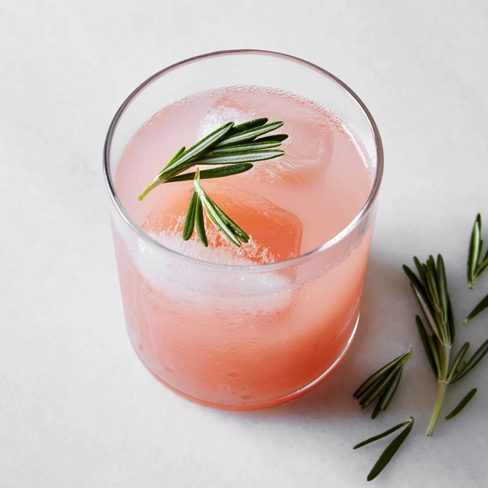

Guava, Grapefruit, and Rosemary Agua Fresca

I have always thought that aguas frescas were born out of
resourcefulness. If you only have one melon to juice but there are ten
people coming over for lunch, how do you make it yield more? By
turning it into an agua fresca. It is a wonderful fresh tradition
shared by the entire country. It is the perfect drink to have when a
fruit juice would be too much and plain water too boring. It has three
basic ingredients: water, fruit, and sugar. The method is basically
the same for all aguas. You can play with different fruit, herb, and
spice combinations and by adjusting the sweetness levels to your taste
and the ratio of water to fruit. For example, we like ours a bit more
watery and I barely add any sugar.